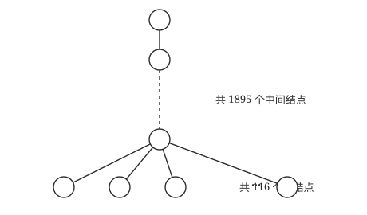
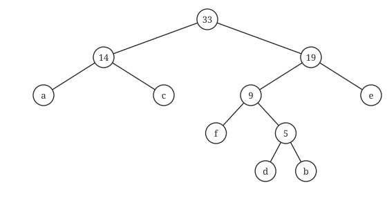
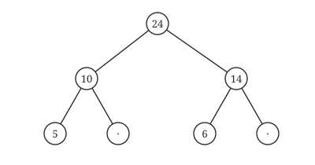

408
408只看页数，这一节是全章最薄的；可按真题密度算，它比遍历还高。线索、森林转换、哈夫曼、并查集四件事，每一件都是一招鲜。
其之壹线索二叉树
上一话说 n 个结点的二叉链表有 n+1 个空指针。线索化就是废物利用：空的左指针指向遍历前驱，空的右指针指向遍历后继。为了区分指向的是孩子还是线索，每个结点加两个标记位 ltag、rtag（1 表示线索）。
| 结点 | 左指针 | 右指针 |
|---|---|---|
| B | 线索 → 前驱 NULL | 孩子 D |
| D | 线索 → 前驱 B | 线索 → 后继 A |
| A | 孩子 B | 孩子 C |
| C | 线索 → 前驱 A | 线索 → 后继 NULL |
怎么做线索题
- 把这棵树的遍历序列写出来（题目问哪种就写哪种）。
- 只看空指针：左空指向序列中的前一个，右空指向序列中的后一个。
- 序列的第一个没有前驱、最后一个没有后继，线索为 NULL。
后序线索树不能完全解决「找后继」
中序线索树能直接找前驱和后继；先序线索树找后继容易、找前驱难；后序线索树找后继仍然需要栈（或父指针），因为后继可能是父结点，而结点里没有父指针。
再深一层
· 先写整棵树的中序序列。树形：a(根)，左 b，右 c；b 的左 d、右 X；d 的右 e。
· 中序 LNR 走：左子树(b分支) → d 的中序(d 无左，先 d 再其右 e)=de → b → X（b 的右孩子）→ 得左半 debX；再根 a；再右子树 c → 完整中序 = debXac。
· X 的前一个是 b（左线索）、后一个是 a（右线索）→ 选 D。
我用程序建这棵树、取中序序列，确认 = debXac，X 的左右邻居为 (b, a)。
再深一层
X 是叶且有左兄弟 Y → X 是右孩子。后序走 …Y…X…，X（作为右孩子）访问完，父结点的左右子树都完了，接下来就访问父结点 → X 的右线索（=后序后继）指向父结点，选 A。
⚠️ 若 X 是左孩子，后继才会跑到"右兄弟子树的最左下"；本题 X 明确是右孩子，所以是父结点。画草图秒懂。
其之貳长子兄弟法：一招通吃
家谱改造
一个家长可以有很多孩子，但二叉树只有两只手。规定：左手牵大儿子，右手牵自己的下一个弟弟。这样任何树都能变成二叉树。
树的三种存储：双亲表示法（数组里存父亲下标，找父亲快，并查集就用它）、孩子表示法（每个结点挂一串孩子链表）、孩子兄弟表示法（就是上面的二叉链表）。
森林 / 树 / 二叉树的遍历对应
| 树 | 森林 | 二叉树 |
|---|---|---|
| 先根 | 先序 | 先序 |
| 后根 | 中序 | 中序 |
只有这两组，没有后序的对应。
数量对应（2011、2014 真题）
森林的叶子数 = 对应二叉树中「左指针为空」的结点数（没孩子 ⟺ 没长子）。
二叉树中右指针为空的结点数 = 非终端结点数 + 1（每个有孩子的家长，其最小孩子没有弟弟；再加上最后一棵树的根）。
再深一层
· 森林里的叶结点 = 没有孩子的结点；
· "左孩子右兄弟"转换后，"没有孩子" ⟺ 左指针为空（左指针存的是长子，没孩子就没长子）；
· 所以 F 的叶结点数 = T 中左孩子指针为空的结点数，选 C。
⚠️ 为什么不是"T 的叶结点数"（选项 A）？因为 T 的叶结点要求左右指针都空（既无孩子又无右兄弟），比"森林叶结点"（只要求无孩子）严格。森林里一个有右兄弟的叶子，转换后左空右不空，在 T 里就不是叶子了。所以 F 叶数 ≥ T 叶数，只有"左空"才精确对应。
我用真实转换对 3000 个随机森林验证：森林叶数 == T 中左指针空的结点数，零反例。
通常本题应采用特殊法求解，设题意中的树是如图所示的结构，则对应的二叉树中仅有前 115 个叶结点有右孩子，所以无右孩子的结点数 = 2011−115 = 1896。

再深一层
"右孩子"在二叉树里代表"右兄弟"，所以无右孩子 ⟺ 在原树里没有右兄弟 ⟺ 是某个双亲的最后一个孩子，或是根。
· 每个分支结点（有孩子的结点）带出一组孩子，那组的最右一个无右兄弟；一共有多少个分支结点，就有多少个这样的"末位孩子"。
· 分支结点数 = 总数 − 叶子数 = 2011 − 116 = 1895；
· 再加上根结点（根在二叉树里也无右孩子）→ 1895 + 1 = 1896，选 D。
公式：无右孩子数 = 分支结点数 + 1 = (n − 叶子数) + 1。
⚠️ 选 C（1895）漏了根那 +1；选 A/B 用错了量。我用 (2011−116)+1 复算 = 1896。
再深一层
| 树 | 对应二叉树 |
|---|---|
| 先根遍历 | 先序遍历 |
| 后根遍历 | 中序遍历 |
· C（后序）、D（层序）都对不上——书里 5.4-10 已证伪"后根↔后序"。
⚠️ 只有两组对应：先根↔先序、后根↔中序。这是本节和 5.3 交叉的高频真题点（2019、2020、2021 连考三年）。
我用真实转换对随机森林验证：后根序列 == BT 中序序列，零反例。
Ⅰ. 父子关系 Ⅱ. 兄弟关系 Ⅲ. u 的父结点与 v 的父结点是兄弟关系
由题意可知 u 是 v 的父结点的父结点，有四种情况：(1) 在原来的树中 u 是 v 的父结点的父结点（对应森林中父子…实为祖孙，属父子链）；(2) 在树中 u 是 v 的父结点；(3) 在树中 u 是 v 的父结点的兄弟；(4) 在树中 u 与 v 是兄弟关系。分析这四种情况对应到森林中的结点关系，可知说法 Ⅰ（父子）和 Ⅱ（兄弟）正确。
再深一层
二叉树里 u→(某孩子)→v 这条"隔一代"的路径，每一步是"左孩子"还是"右孩子"有 4 种组合，翻译回森林分别是：
· 左-左：u 是 v 祖父（森林里父子链）；
· 左-右 / 右-左：u 是 v 的父 或 父的兄弟；
· 右-右：u 与 v 是兄弟（连走两次右兄弟）。
汇总森林中可能的关系：父子（Ⅰ）、兄弟（Ⅱ）都能出现；Ⅲ（两人父结点互为兄弟，即堂兄弟）造不出 → 选 B。
⚠️ 这题硬算容易乱，记住方法：把二叉树路径的每一步"左/右"逐个翻译成森林的"父子/兄弟"，枚举所有组合。
其之參哈夫曼树
带权路径长度 WPL 最小的树。每次取最小的两个合并。
哈夫曼三条
- n 个叶子，总共 2n−1 个结点，没有度为 1 的结点（因为每次合并新增 1 个，合并 n−1 次）。
- 权越小离根越远；最小的两个一定是兄弟。
- 不唯一（左右可换、权相等时选法不同），但 WPL 唯一。
m 叉哈夫曼树：要补 0 权虚结点让 (n−1) % (m−1) == 0，否则根不满。
前缀编码：任何一个编码都不是另一个的前缀，这样译码才唯一。哈夫曼树的左 0 右 1 天然保证这一点，因为所有字符都在叶子上。

再深一层
构造哈夫曼树后各字符深度（=码长）：e(10)、c(8)、a(6) 权大 → 码长 2；f(4)、b(3)、d(2) 权小 → 码长 4、4、4（我程序算得深度分布 [2,2,2,3,4,4]，对应 e/c/a 短、f/b/d 长）。
看选项 A：00,1011,01,1010,11,100 → 码长 2,4,2,4,2,3。
· a=00(2)、c=01(2)、e=11(2) 都是 2 位 ✓（三个权最大的码最短）；
· 且是前缀码（我验证过）。
· 其余选项要么码长分布对不上哈夫曼深度、要么不是前缀码。
⚠️ 这类题最快解法：① 先算哈夫曼各字符的码长（深度）；② 核对选项的"码长分布"是否一致；③ 再验前缀码。我程序确认 A 的码长排序 [2,2,2,3,4,4] 恰等于哈夫曼深度分布、且 A 是前缀码。
再深一层
· n 个符号 = n 个叶；构造做 n−1 次合并 = n−1 个内部结点；共 2n−1。
⚠️ 与 5.5-5 同型（那题给总数求叶数）：叶数 = (总数+1)/2，(115+1)/2 = 58。一个公式两种问法。
再深一层
· A：01/0000/0001/001/1 —— 逐个查，无前缀关系 ✓；
· B：011/000/001/010/1 ✓；
· C：全是 3 位等长码 ✓；
· D：110 是 1100 的前缀 ✗ → 不是前缀码，选 D。
快速扫描技巧：把编码按长度从短到长排，短的逐个去看是不是某个长的开头；等长码之间不可能有前缀关系，可跳过。D 里有 110（3位）和 1100（4位），110 正是 1100 砍掉末位 → 命中。
我用两两 startswith 程序验证，唯 D 非前缀码。

再深一层
· D：24,10,5 和 24,14,6 —— 两路在根后分叉，根的两个孩子是 10 和 14 → 10+14 = 24 ✓；再 10 有孩子 5、14 有孩子 6，均合法（10>5、14>6）→ 能构成，选 D。
· A：两路都经 24→10，说明共享结点 10，但 10 的两个孩子给出 5 和 7 → 5+7=12≠10 ✗；
· B：分叉点根的孩子是 10 和 12 → 10+12=22≠24 ✗；
· C：根孩子 10 和 14 → 10+14=24 ✓，但 10 有孩子 10（10,10,10：子权=父权，违反"父>子"）✗。
解题模板：① 看两路在哪分叉；② 分叉点的父权是否 = 两分支和；③ 每条路权值是否严格递减。我用程序对四项逐一判定，唯 D 通过。
1）给出完整的合并过程，并求出最坏情况下比较的总次数。
2）根据你的合并过程，描述 n（n≥2）个不等长升序表的合并策略，并说明理由。
2）对多个有序表两两合并时，若表长不同，则最坏情况下总比较次数依赖于表的合并次序。可以借助哈夫曼树的构造思想，依次选择最短的两个表进行合并，此时可以获得最坏情况下的最佳合并效率。
再深一层
为什么是哈夫曼？一个表越早参与合并，它的元素被"重复比较"的次数越多（每次合并都要再扫一遍）——这正对应"叶结点越早合并，深度越大，带权路径越长"。要让总比较最少 = 让长表尽量晚合并（深度小）= 哈夫曼树最小 WPL。
合并过程（每次挑最小两个）：
10+35→45 · 45+40→85 · 50+60→110 · 85+110→195 · 195+200→395。
每次比较 m+n−1 次：44+84+109+194+394 = 825。
⚠️ 合并两个长 m、n 有序表最坏比较 m+n−1 次（不是 m+n）——最后一个元素直接放入无需比较。这个 −1 每次都要记。我用哈夫曼式合并程序算得总比较 825。
其之肆并查集
解决「这两个元素是不是一个集合的」。用双亲表示法：S[x] 存父亲下标，根存负数（绝对值是集合大小）。
int Find(int S[], int x) { int root = x; while (S[root] >= 0) root = S[root]; while (x != root) { // 路径压缩：沿路都直接指向根 int t = S[x]; S[x] = root; x = t; } return root; } void Union(int S[], int a, int b) { int r1 = Find(S, a), r2 = Find(S, b); if (r1 == r2) return; if (S[r2] > S[r1]) { // 根存负的大小，r1 的集合更大 S[r1] += S[r2]; S[r2] = r1; } else { S[r2] += S[r1]; S[r1] = r2; } }
并查集的复杂度
无优化：Find 最坏 O(n)。按大小合并：树高不超过 ⌊log₂n⌋+1，Find O(log n)。再加路径压缩：几乎 O(1)（α(n)）。
领域展开
线索：写出序列，只管空指针。
转换：左长子、右兄弟；后根 = 中序。
哈夫曼：2n−1 个结点，WPL 唯一。
并查集：S[x]<0 是根，按大小并 + 路径压缩。